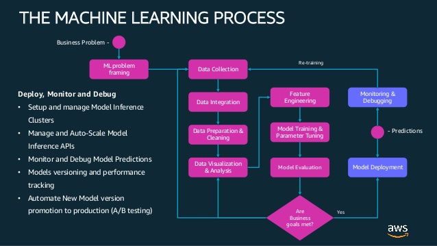
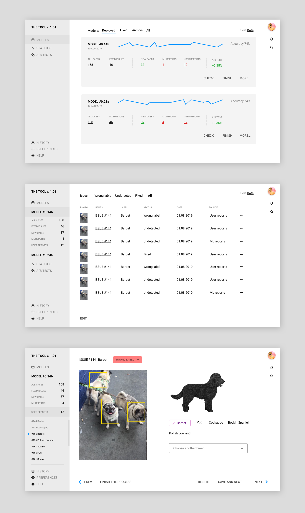

Monitor and Debug Model Predictions
The PM should be able to discover and flag cases where the model got the breed wrong. The engineer should be able to notify the PM when they have a new model that resolves these cases. NB the engineer is happy with their existing tools for training and deploying models, so you will have to think about how those will integrate with your solution.

Questions
What are the tools for training and deploying models?
How the process of training and deploying models looks like?
How Would the PM know that the case is wrong?
What information an engineer needs from PM to tune the model?
What is the life cycle of each photo(case) in this process?
Assumptions
There are two types of users
There are two different tools (parts) which can exchange with data
The main object of manipulation is a MODEL and WRONG ISSUES
or
Both users are working with one tool
Objects
What is the model? What can we tell about this object?
Model it is a list of rules (may consist of decisions/cases)
Model can have a name
Model can have a time stamps
Model can be on different stages of its life cycle
A rule (decision/case) is an object too
Photo
Number
Status of breed detection by ML: strong yes, strong no, maybe (a couple of variants)
Main Breed label was chosen by ML
Suggested breed labels by ML
Main Breed label was chosen by PM
Suggested breed labels by PM
How many types of models (statuses/stages) do we have?
New model
Ready for testing (training/retraining) by PM
Testing (training/retraining) in progress
Tested (trained/retrained)by PM
Ready for deployment
Deployed
The solution
The plugin is tagging the photos in a FB group. All taggings synchronized with our tool in real-time (maybe) Let's use a bit of crowdsourcing: Users/admins can press a button REPORT and (we should add the wrong breed option) report perhaps even suggest the right tag.
The information is coming to our tool for PM with link to the name/number of the current model. PM can see the list of models/versions. For each model PM can check the date stamp, statistics (right/wrong, etc.) and list of the cases. Each case can have a page when PM can check and fix the issue.
Developer or the system itself or they together make changes in the model and deploy it. After deployment PM can start the process of marking and fixing again. It works as an evaluation loop until the statistic will be satisfying.
